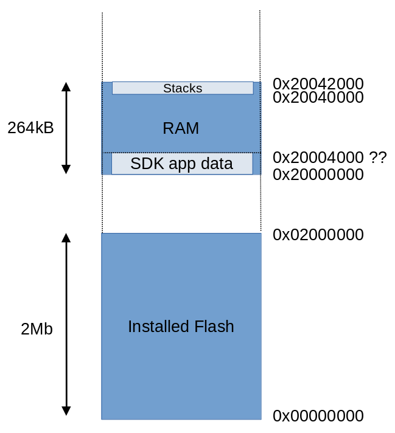

Raspberry Pi Pico: loading code into RAM and running it -- part 1

Please bear in mind that this article applies to the original Pico, with RP2040 chip. I'm not sure how much of it, if any, applies to later RP devices.This article is the first of (at least) two on the subject of running binary code in RAM on the Raspberry Pi Pico. This article explains the memory layout of the Pico and where space can be found for the binary code. The second article covers compiling code for the Pico in such a way that it can actually be run this way.
While this article is concerned with the Pico C SDK, I should point out that I'm not talking about running an application built with the SDK from RAM. The SDK already has a mechanism to do just this. Rather, I'm talking about using an application built with the SDK, and deployed in flash (ROM) to load and run other applications from RAM.
Why on Earth would you want to do such a thing? Well, if you store binary code on, say, an SD card, this opens the way to running applications that are hugely larger than the (2Mb) size of the flash. Admittedly, these applications would have to be divided into segments of not more than about 200kB, because that's all the RAM that is available. Still, that's a tractable problem for many applications.
Moreover, you might want to be able to run a program from a set of programs stored on an SD card. If you can do that, then you have the beginning of an operating system. So running compiled code from RAM is a useful educational exercise as well.
One thing I won't be covering in these articles is managing an SD card from Pico code. This subject is already illustrated thoroughly in this demonstration program by Carl Kugler. Here I'm assuming that you already have a way to make your code available.
Note:
I'm writing this article for experienced C developers, who are already familiar with the Pi Pico C SDK. I'm not assuming much knowledge of ARM Cortex programming, but some would be helpful.
Memory layout
In order to run code from RAM we need to know how much RAM is available, where it is, and how it's addressed. The first question is easy to answer -- 264kB of RAM is installed. The amount that is actually available isn't easy to determine with certainty -- more on that topic later. As for addressing -- for our purposes, the Pico CPU has a linear, physical memory space that includes flash and RAM. We don't (for our present purposes) have to worry about memory virtualization. The address space starts with address zero, and extends to 0x20042000. Of course, most of this 512Mb address range is, in fact, unused.
The diagram below shows the Pico memory map, when running a program created with the Pico C SDK. It is not to scale, because the Flash is hugely larger than the RAM, and most of the address space is unused. Interpreting the map can be a little awkward, because of the large number of 2s and 4s in all the addresses.
The flash occupies the memory map from zero to 0x0200000 (2Mb). The installed RAM starts at 0x20000000. Note that there's more than 500Mb of unused space between flash and RAM. The RAM itself is a 264kB region, from 0x20000000 to 0x20042000.

Pico memory map, when using the Pico C SDK. This diagram is not
remotely to scale.
At the top of RAM are the stacks -- each CPU core needs its own stack,
typically 4kB in size. At the bottom of RAM is the work area for the
program created by the C SDK. This area includes some general data
but, in particular, any memory dynamically allocated using
malloc() and the like will end up here.
How large is this area? Well, there's no way to be certain, as it depends on how much memory the SDK program uses. In the diagram I have assumed that the SDK program uses 8Kb of memory, putting the top of that region at 0x20004000. But I've marked it with "??" because this is variable and, unless the main application does no dynamic allocation at all, it can only be determined by testing. Some flexibility will be required in this area.
Assuming that my assessment of the memory used by the SDK program is correct, we can load the code to be executed in RAM at 0x20004000, and that's the address I will assume in the rest of this article.
Calling code in RAM
At this point I'm assuming that we have a way to get the executable code into RAM, and have been able to compile or assemble it to be compatible with the address where we will load it -- 0x20004000 in this example.
So far as I know, C doesn't have a mechanism to transfer control to a particular, explicit address. However, we can define a function pointer, and assign it a specific address. Then we can call the address through the pointer. Here's how that looks:
typedef void (*EntryFn) (void); EntryFn entry = (EntryFn) 0x20004000 | 1. entry();
A glaring oddity here is the | 1 applied to the address.
To understand why this is necessary, we need a short digression into
ARM instruction set design.
ARM CPUs have historically supported two complete instruction sets: one in which each op-code is 32 bits (usually just called the "ARM instruction set") and one of 16 bits, called "thumb". For many applications the thumb instruction set is preferable to the ARM set -- twice as many instructions can be read from memory in the same time, and they only take half as much memory. Of course, there are many operations that need more thumb instructions to specify than would be required with the larger ARM op-codes. Still, the trade-off is an effective one for some applications.
The ARM Cortex M0+ CPU on which the Pico is based only supports thumb instructions. Trying to execute ARM op-codes will eventually lead to a crash or a CPU halt. Because both ARM and thumb modes are notionally available, the CPU needs a way to switch between them. It does this using the least-significant bit of a branch instruction. Since ARM op-codes have to be aligned on 2-byte or 4-byte boundaries, the least-significant bit does not, in fact, carry any information about the address: you can't actually branch to an odd-numbered address. So using this bit for mode switching makes sense -- at least in the mad world of ARM it does.
When you write a function call in C you don't have to worry about this: the compiler will generate the correct branch address. However, when branching to a specific address, as in the example code above, you need to set the least-significant bit of the address explicitly, so that the CPU will stay in thumb mode.
If the code you are running in RAM calls into the flash at a specific address, it will have to set the least-significant bit in the same way. This is something that is easy to overlook, and can be difficult to troubleshoot.
Calling from RAM to flash
There's much more flash than there is RAM so, if you're writing programs to run from RAM, it makes sense to put as many general-purpose routines in flash as possible. After all, almost every program will need a way to copy blocks of memory around and toggle GPIO pins. Many will need a way to read additional files from the SD card, and this takes a substantial amount of code. If you've already written code to read data from an SD card, just to get your code into RAM, it makes sense to make that code available to program in RAM, rather than duplicating it.
The problem is that the locations of the relevant routines in RAM will not be known; or, at least, they cannot be guaranteed to remain the same when the contents of flash change. We can get around this problem in exactly the same way that operating systems do: we provide a single entry point into the code in flash, that takes a numeric code indicating which routine to run.
In the operating system world, calling a routine this way is called a system call or syscall or a software interrupt (SWI). An SWI goes a bit further than a simple call into a routine -- most CPUs, including ARM, use SWI to change from "user" mode to "supervisor" (or "kernel") mode. If all we need to do is to call from RAM to flash on a Pico, we don't have to worry about these subtleties -- we'll just store the address of the syscall entry point at some well-know, fixed address in RAM, and the program in RAM will read that address and branch to it to make a system call.
In a traditional operating system design, syscalls are used for
invoking the kernel, typically for doing I/O operations on hardware.
These calls operate with higher privileges than
user code. However, when programming for the Pico, I've found it
useful to provide syscalls for many other things that require
significant code. For example, I implement number conversion
functions like strtol() as syscalls. They require a significant
amount of code that almost any program, whether running from flash or RAM,
will need -- directly or indirectly.
This would be a crazy thing to do in an operating system. The change from user mode to supervisory mode is relatively time-consuming, and we don't want to do more in supervisory mode than is absolutely essential. In a microcontroller, however, it makes sense to implement as many general-purpose routines as syscalls as the ROM can accommodate. Since there is no mode switch, there are no overheads involved in doing this, and we need to preserve as much RAM as possible. In any case, a program that calls a specific address in flash has to make the address least-significant-bit modification we discussed earlier.
Passing arguments from flash to RAM
In the simple example above, the function in RAM was defined to take no arguments and return no result. In practice, we will need both arguments and return values.
Fortunately, if we use the same C compiler to build both the calling and the called program, and we're careful how it is invoked, we won't have to worry about this. The compiler will generate compatible argument-passing code for both programs. If we're using an assembler, then we'll need to understand how arguments are passed.
There is a well-established calling convention for ARM programming. The first four integer or pointer arguments are stored in registers r0-r4. That's sufficient for many function calls. If the function takes more arguments than this, they are passed on the stack. The return value is passed in the r0 register. Floating-point arguments are rather more fiddly to handle, but this subject is well documented (although this documentation tends to change, and move around, so a bit of web searching may be needed).
As I said, though, the intricacies or argument passing are only important if you're calling from C to assembly code, or vice versa. All C compilers, I believe, that support ARM use the same calling convention.
Returning from a called function in RAM
If the calling function was implemented in C, it will have stored the
return address in the ARM link register, so the called function returns
simply by executing bx lr. Again, this is only significant
when programming in assembly language -- a C compiler knows how to
generate the right code.
What next?
In this article I've described how the Pico memory is organized, and how calls can be made from flash to RAM and vice versa. In the next article I'll describe how to use the GCC compiler and linker to create code that is suitable to be loaded into RAM and executed.